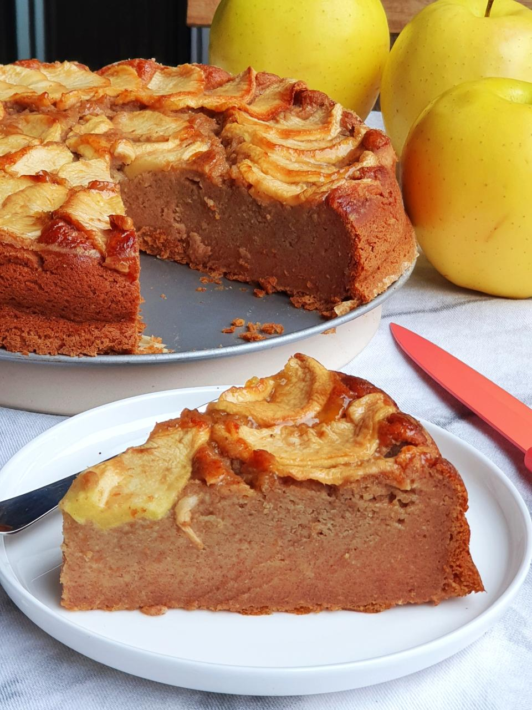

Tarta de Manzana Casera

La Tarta de Manzana es uno de los postres más tradicionales y apreciados en todo el mundo. Su combinación de una masa suave y crujiente con manzanas tiernas y aromáticas crea un equilibrio perfecto entre dulzor y frescura. Es ideal para disfrutar en una merienda, acompañar un café o sorprender a la familia con un postre casero lleno de sabor.